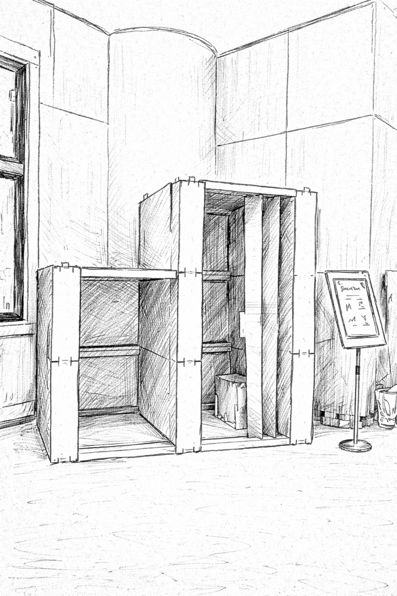
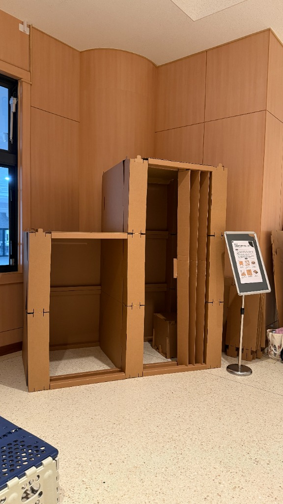
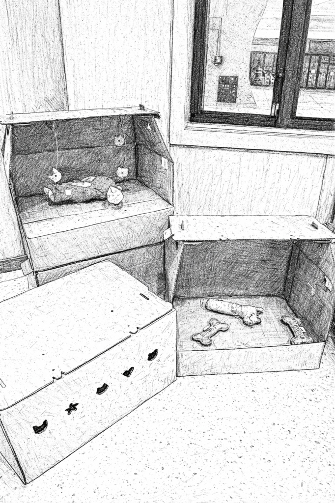
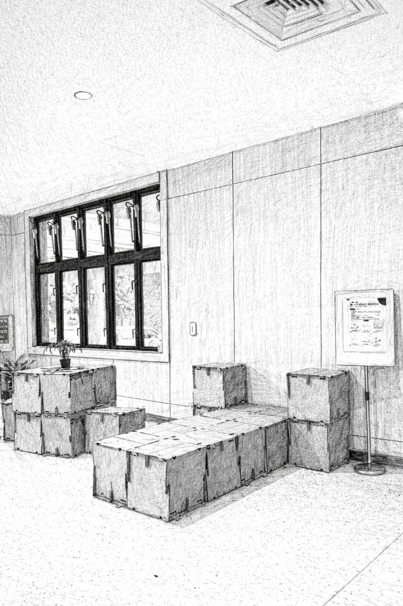
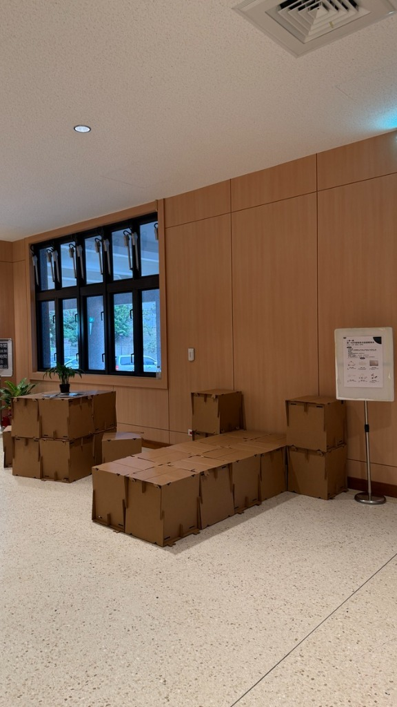

「打包一個家」防災臨時生活創新設計
請參觀本屆參選的四項作品，試想在緊急災難時刻，你會希望避難時能使用到哪項作品呢？
助眠罩
避難時的遮光好眠設計


設計師
張幻柔、張蓴、莊進發
現況問題
- 高敏人在睡眠時需要密閉且完全遮蔽光線的空間
- 睡眠時的隱密性
- 光線太強影響休息
- 可調節光線強弱
設計特點
-
特點1 手提把可使用左右兩側提把移動，不使用時可以將紙板蓋上遮擋光線。
-
特點2 透氣孔後側透氣孔可依照喜好需求掀開，始內部透氣。
-
特點3 牛皮紙遮光罩上蓋使用牛皮紙材質，達到輕量化，輕鬆掀開坐起身或躺下動作。
-
特點4 光線調節上蓋牛皮紙內部有滑動圓孔，可以依照喜好做光線強弱的控制。
-
特點5 隱密舒適無壓迫感依照人體工學量測設計，提供高敏人或對光線敏感者一個舒適的休息空間。
-
特點6 攤平運輸壓線設計，讓整個產品可以攤平，利於存放和運輸。
靜心屏
在緊急避難環境劃出一隅私人空間


設計師
吳致勳、王昭怡、黃千峻
現況問題
- 毫無隱私：臨時安置的開放式空間無法滿足更衣、哺乳與個人生理行為所需的基本遮蔽，影響使用者的尊嚴與身體舒適度，亦可能使人因被迫暴露於他人視線中而產生壓力、焦慮或自我壓抑的行為。
- 心神不寧：高密度共處與持續的感官刺激，使部分使用者（包含一般大眾與心智障礙者）難以調節情緒，迫切需要一個可短暫獨處、穩定心理狀態的個人空間。
- 恐慌蔓延：當民眾因突發刺激在開放安置空間中出現情緒失控行為時，缺乏即時安撫與隔離空間，容易使不安情緒暴露並擴散，影響周遭民眾的心理安全與整體空間秩序。
設計特點
-
特點1 全遮擋阻擋極大部分縫隙
-
特點2 多元組合依照想要組裝的尺寸自由拼接
-
特點3 攤平收納每個零件皆可攤平收納
-
特點4 快速組裝在熟悉操作後可以在短時間內組裝完成
-
特點5 紙卡扣鎖的門防呆設計僅能從內部上鎖
-
特點6 天花板可調整透光度的天花板
緊急避難應變嬰兒床
孩童與毛孩避難時的安心角落


設計師
宋永波、李風利、劉晨
現況問題
- 帶著嬰兒和毛孩的家長不知道如何安置嬰兒和寵物
- 救援運輸紙箱，到現場後，一般都是廢紙，如何再利用給嬰兒和毛孩使用。
- 嬰兒安置的嬰兒床和寵物臨時安置籠子如何簡單快速成型
設計特點
-
特點1 運輸箱尺寸700*500*400mm，全封閉運輸箱，可以整合嬰兒短期需要的用品和食物。可以運輸其他用品。箱子2邊有手提孔可以拆開，雙手更好的搬運箱子
-
特點2 150mm嬰兒床箱子裡面的折疊墊輕鬆打開後，墊在下面將床抬高150mm，阻斷了地面的髒汙直接接觸嬰兒。嬰兒床兩邊也有兩個新的把手，當床的時候也很好拿取
-
特點3 0mm嬰兒床將折疊墊拿出來，再把紙板往裡對折行成新的無高度嬰兒床-特點是：還保留150mm高度側面，保護嬰兒睡著後不會翻滾出來
-
特點4 寵物臨時安置籠將箱子的5個帶孔卡片往裡一按，就會出現5個透氣孔，箱子2邊有卡扣，可以卡住10kg以內的動物臨時不能跑出來
-
特點5 嬰兒臨時玩具箱子的5個透氣孔的卡片掉下來後，可以用繩子串起來掛在嬰兒床上當轉移視線的玩具。卡片形狀各異，有小熊小貓小狗等
-
特點6 救災結束後當寵物窩救災結束後，箱子既可以當寵物運輸箱，也可以帶回家折疊成嬰兒床給寵物當一個永久的家
小憩一隅
單一元件組裝成百變避難家具


設計師
宋永波、王建、嵇磊磊、黃榮凱
現況問題
- 缺少休息設施：受災群眾休息時，若直接躺地面上，易受冷生病，且地面灰塵多，難以保持乾淨，同時在人員走動時，易發生踩踏等安全問題；而席地而坐，易產生疲勞，出現久坐後起立困難等問題。
- 缺乏舒適性：現有的避難床採用硬質塑膠材料，舒適性有所欠缺。
- 產品功能性單一性：現用的凳子、床功能性單一，缺乏不同時段、不同需求的可變性。
- 成本高、生產週期長：單一功能避難家具生產成本高、生產週期長，需要一定備貨量，缺乏緊急應變能力。
設計特點
-
特點1 可變性凳、桌、床等形態可隨意轉換。
-
特點2 一般性969*380mm的BC楞紙，符合包裝廠常備紙規格。
-
特點3 舒適性BC楞紙具有一定的可壓縮性，舒適性較好。
-
特點4 週期短製版→紮盒，生產週期短。
-
特點5 成本低全紙、單一結構，成本低。
-
特點6 應用廣可用作辦公、用餐、睡覺、輔助支撐等。
「打包一個家」防災臨時生活創新設計
「打包一個家」是富迪印刷自2022啟動的永續計畫，運用集團包裝結構設計與材質創新的實力，投入於具永續價值的社會議題中。今年我們的設計團隊與製造生產線，正在協助災後避難收容過程中，能有更安全、安心、易用的安置工具。
我們相信跨領域的協作始能激發創新，因此在這個階段，期待能邀請你成為產品測試的一員，藉由你的自身經驗協助團隊了解使用者對於目前產品的觀點。
請參觀四項作品，試想在緊急災難時刻，你會想用哪一個呢？（可多選）
目前票選情況
統計載入中...
大家的回饋
載入中...
想和設計團隊說什麼呢？
只有我自己
有伴侶
有嬰孩
有毛孩
有年長者